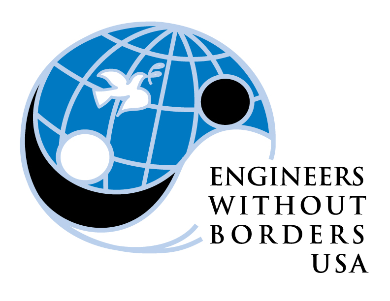
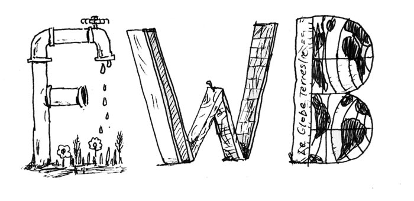
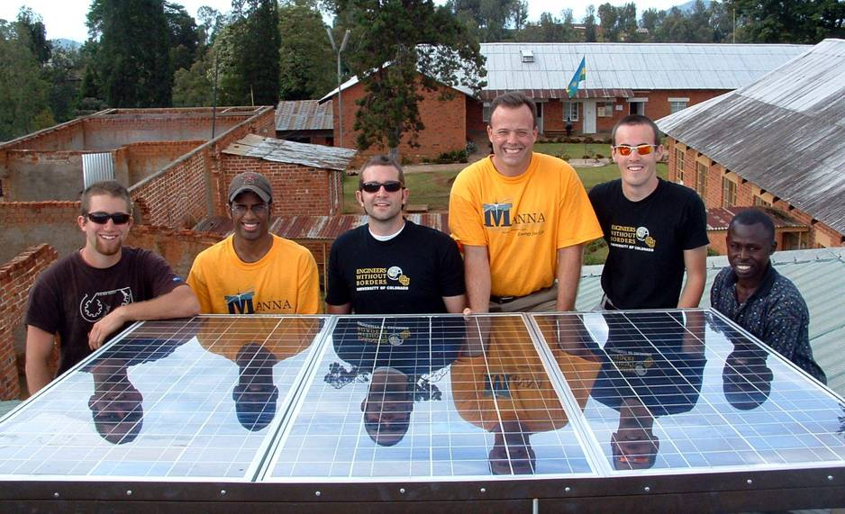

Engineering change is a team effort, and everyone has an important role to play. Join our vast network of dedicated members to help build strong, sustainable communities around the world. While our projects focus primarily on engineering, volunteers come from a variety of fields such as public health, international development, marketing, accounting, and IT. We welcome a diversity of backgrounds to help us meet basic human needs worldwide.
Our approach to development is based on more than blueprints and measurements. its based on real relationships and five-year partnerships with communities. We do more than build latrines for communities, we equip them to build and maintain latrines themselves. At the same time, the volunteers and community members learn valuable leadership skills by charting pathways through complex challenges and achieving shared goals.